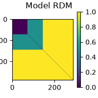
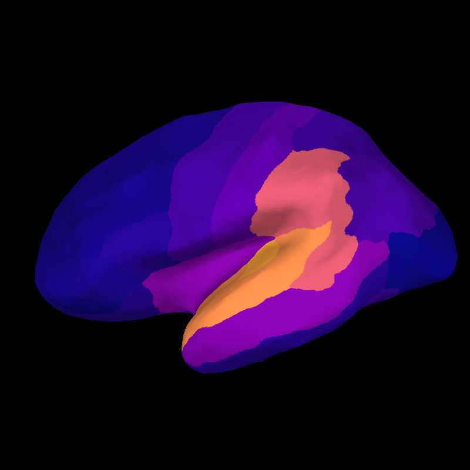

Note
Go to the end to download the full example code.
Source-level RSA using ROI’s#
In this example, we use anatomical labels as Regions Of Interest (ROIs). Rather than using a searchlight, we compute RDMs for each ROI and then compute RSA with a single model RDM.
The dataset will be the MNE-sample dataset: a collection of 288 epochs in which the participant was presented with an auditory beep or visual stimulus to either the left or right ear or visual field.
# sphinx_gallery_thumbnail_number=2
# Import required packages
import mne
import mne_rsa
mne.set_log_level(False) # Be less verbose
mne.viz.set_3d_backend("pyvista")
We’ll be using the data from the MNE-sample set. To speed up computations in this example, we’re going to use one of the sparse source spaces from the testing set.
sample_root = mne.datasets.sample.data_path(verbose=True)
testing_root = mne.datasets.testing.data_path(verbose=True)
sample_path = sample_root / "MEG" / "sample"
testing_path = testing_root / "MEG" / "sample"
subjects_dir = sample_root / "subjects"
Using default location ~/mne_data for testing...
Dataset testing version 0.0 out of date, latest version is 0.176
Fetching 1 file for the testing dataset ...
0.00B [00:00, ?B/s]
68.6kB [00:00, 681kB/s]
326kB [00:00, 1.79MB/s]
880kB [00:00, 3.50MB/s]
2.75MB [00:00, 9.49MB/s]
3.93MB [00:00, 10.3MB/s]
4.97MB [00:00, 10.0MB/s]
5.97MB [00:00, 8.69MB/s]
6.87MB [00:00, 7.80MB/s]
7.68MB [00:01, 7.79MB/s]
8.48MB [00:01, 7.79MB/s]
9.28MB [00:01, 7.41MB/s]
10.2MB [00:01, 7.92MB/s]
11.2MB [00:01, 8.56MB/s]
12.1MB [00:01, 8.08MB/s]
13.1MB [00:01, 8.07MB/s]
14.2MB [00:01, 8.61MB/s]
15.4MB [00:01, 8.58MB/s]
16.8MB [00:02, 8.83MB/s]
17.8MB [00:02, 8.70MB/s]
18.9MB [00:02, 9.10MB/s]
19.9MB [00:02, 9.10MB/s]
21.0MB [00:02, 8.29MB/s]
21.8MB [00:02, 6.57MB/s]
22.5MB [00:02, 6.60MB/s]
23.2MB [00:03, 5.21MB/s]
23.8MB [00:03, 4.85MB/s]
24.3MB [00:03, 4.51MB/s]
24.8MB [00:03, 4.08MB/s]
25.3MB [00:03, 3.59MB/s]
25.7MB [00:03, 3.45MB/s]
26.0MB [00:03, 3.30MB/s]
26.5MB [00:04, 3.42MB/s]
26.8MB [00:04, 3.27MB/s]
27.3MB [00:04, 3.18MB/s]
27.8MB [00:04, 3.48MB/s]
28.1MB [00:04, 3.18MB/s]
28.6MB [00:04, 3.04MB/s]
29.1MB [00:04, 3.35MB/s]
29.4MB [00:05, 3.35MB/s]
29.9MB [00:05, 3.17MB/s]
30.4MB [00:05, 3.18MB/s]
30.9MB [00:05, 3.18MB/s]
31.5MB [00:05, 3.18MB/s]
32.1MB [00:05, 3.98MB/s]
32.6MB [00:06, 3.05MB/s]
33.0MB [00:06, 3.23MB/s]
33.6MB [00:06, 3.51MB/s]
34.1MB [00:06, 3.77MB/s]
34.6MB [00:06, 3.68MB/s]
35.1MB [00:06, 3.82MB/s]
35.7MB [00:06, 3.98MB/s]
36.2MB [00:06, 4.12MB/s]
36.7MB [00:07, 4.07MB/s]
37.2MB [00:07, 4.20MB/s]
37.7MB [00:07, 4.21MB/s]
38.3MB [00:07, 4.24MB/s]
38.8MB [00:07, 4.29MB/s]
39.3MB [00:07, 4.39MB/s]
39.8MB [00:07, 4.31MB/s]
40.6MB [00:07, 4.82MB/s]
41.2MB [00:08, 3.20MB/s]
42.2MB [00:08, 4.55MB/s]
43.3MB [00:08, 5.78MB/s]
44.3MB [00:08, 6.75MB/s]
45.4MB [00:08, 7.56MB/s]
46.4MB [00:08, 8.29MB/s]
47.4MB [00:08, 8.74MB/s]
48.5MB [00:08, 9.15MB/s]
49.5MB [00:09, 9.08MB/s]
50.6MB [00:09, 9.69MB/s]
51.6MB [00:09, 9.71MB/s]
52.7MB [00:09, 9.90MB/s]
53.7MB [00:09, 8.71MB/s]
54.6MB [00:09, 6.43MB/s]
55.3MB [00:09, 5.77MB/s]
56.0MB [00:10, 5.49MB/s]
56.6MB [00:10, 5.26MB/s]
57.2MB [00:10, 4.58MB/s]
57.7MB [00:10, 4.70MB/s]
58.2MB [00:10, 4.62MB/s]
58.7MB [00:10, 4.55MB/s]
59.2MB [00:10, 4.37MB/s]
59.8MB [00:10, 4.37MB/s]
60.3MB [00:11, 4.17MB/s]
60.8MB [00:11, 4.36MB/s]
61.3MB [00:11, 4.25MB/s]
61.9MB [00:11, 4.26MB/s]
62.4MB [00:11, 4.28MB/s]
62.9MB [00:11, 4.15MB/s]
63.4MB [00:11, 4.24MB/s]
64.0MB [00:11, 4.27MB/s]
64.5MB [00:12, 4.37MB/s]
65.0MB [00:12, 4.30MB/s]
65.8MB [00:12, 4.82MB/s]
66.3MB [00:12, 4.71MB/s]
66.8MB [00:12, 4.55MB/s]
67.4MB [00:12, 4.50MB/s]
67.9MB [00:12, 4.52MB/s]
68.4MB [00:12, 4.50MB/s]
68.9MB [00:13, 4.34MB/s]
69.5MB [00:13, 4.39MB/s]
70.0MB [00:13, 4.41MB/s]
70.5MB [00:13, 4.39MB/s]
71.0MB [00:13, 4.28MB/s]
71.6MB [00:13, 4.30MB/s]
72.1MB [00:13, 4.35MB/s]
72.6MB [00:13, 4.33MB/s]
73.1MB [00:13, 4.29MB/s]
73.7MB [00:14, 4.46MB/s]
74.3MB [00:14, 4.56MB/s]
75.0MB [00:14, 5.19MB/s]
76.2MB [00:14, 6.94MB/s]
77.3MB [00:14, 7.81MB/s]
78.4MB [00:14, 8.48MB/s]
79.4MB [00:14, 8.89MB/s]
80.5MB [00:14, 9.24MB/s]
81.5MB [00:14, 9.49MB/s]
82.6MB [00:15, 9.77MB/s]
83.6MB [00:15, 9.82MB/s]
84.7MB [00:15, 9.99MB/s]
85.7MB [00:15, 9.99MB/s]
86.7MB [00:15, 9.16MB/s]
87.6MB [00:15, 8.48MB/s]
88.6MB [00:15, 8.25MB/s]
89.4MB [00:15, 8.27MB/s]
90.4MB [00:15, 8.00MB/s]
91.5MB [00:16, 8.14MB/s]
92.5MB [00:16, 8.47MB/s]
93.6MB [00:16, 8.90MB/s]
94.6MB [00:16, 9.26MB/s]
95.7MB [00:16, 9.48MB/s]
96.7MB [00:16, 9.64MB/s]
97.8MB [00:16, 9.83MB/s]
98.8MB [00:16, 8.37MB/s]
99.7MB [00:17, 6.86MB/s]
100MB [00:17, 5.94MB/s]
101MB [00:17, 5.77MB/s]
102MB [00:17, 5.20MB/s]
102MB [00:17, 5.59MB/s]
104MB [00:17, 6.68MB/s]
105MB [00:17, 7.60MB/s]
106MB [00:17, 8.26MB/s]
107MB [00:18, 8.88MB/s]
108MB [00:18, 8.94MB/s]
109MB [00:18, 8.28MB/s]
109MB [00:18, 8.34MB/s]
110MB [00:18, 8.34MB/s]
111MB [00:18, 8.73MB/s]
112MB [00:18, 8.69MB/s]
113MB [00:18, 7.14MB/s]
115MB [00:19, 8.79MB/s]
116MB [00:19, 10.2MB/s]
118MB [00:19, 11.3MB/s]
119MB [00:19, 11.7MB/s]
120MB [00:19, 11.4MB/s]
121MB [00:19, 10.4MB/s]
122MB [00:19, 9.30MB/s]
123MB [00:19, 8.69MB/s]
124MB [00:20, 8.18MB/s]
125MB [00:20, 8.22MB/s]
126MB [00:20, 7.85MB/s]
127MB [00:20, 7.87MB/s]
127MB [00:20, 7.62MB/s]
128MB [00:20, 7.65MB/s]
129MB [00:20, 7.70MB/s]
130MB [00:20, 7.69MB/s]
131MB [00:20, 7.74MB/s]
131MB [00:20, 7.80MB/s]
132MB [00:21, 7.87MB/s]
133MB [00:21, 7.92MB/s]
134MB [00:21, 7.99MB/s]
135MB [00:21, 8.05MB/s]
136MB [00:21, 8.09MB/s]
136MB [00:21, 8.11MB/s]
137MB [00:21, 8.08MB/s]
138MB [00:21, 7.43MB/s]
139MB [00:21, 6.87MB/s]
139MB [00:22, 6.59MB/s]
140MB [00:22, 6.36MB/s]
141MB [00:22, 6.23MB/s]
141MB [00:22, 6.24MB/s]
142MB [00:22, 6.29MB/s]
143MB [00:22, 6.37MB/s]
143MB [00:22, 6.35MB/s]
144MB [00:22, 6.40MB/s]
145MB [00:22, 6.41MB/s]
145MB [00:22, 6.44MB/s]
146MB [00:23, 6.47MB/s]
147MB [00:23, 6.56MB/s]
147MB [00:23, 6.56MB/s]
148MB [00:23, 6.60MB/s]
149MB [00:23, 6.64MB/s]
149MB [00:23, 6.69MB/s]
150MB [00:23, 6.73MB/s]
151MB [00:23, 6.77MB/s]
151MB [00:23, 6.62MB/s]
152MB [00:23, 6.69MB/s]
153MB [00:24, 6.71MB/s]
153MB [00:24, 6.76MB/s]
154MB [00:24, 6.79MB/s]
155MB [00:24, 6.82MB/s]
155MB [00:24, 6.86MB/s]
156MB [00:24, 6.90MB/s]
157MB [00:24, 6.91MB/s]
158MB [00:24, 6.94MB/s]
158MB [00:24, 6.98MB/s]
159MB [00:24, 7.00MB/s]
160MB [00:25, 7.00MB/s]
160MB [00:25, 6.75MB/s]
161MB [00:25, 6.02MB/s]
162MB [00:25, 5.87MB/s]
162MB [00:25, 5.68MB/s]
163MB [00:25, 5.64MB/s]
163MB [00:25, 5.40MB/s]
164MB [00:25, 5.46MB/s]
165MB [00:25, 5.54MB/s]
165MB [00:26, 5.59MB/s]
166MB [00:26, 5.66MB/s]
166MB [00:26, 5.78MB/s]
167MB [00:26, 5.81MB/s]
168MB [00:26, 5.87MB/s]
168MB [00:26, 5.95MB/s]
169MB [00:26, 6.05MB/s]
169MB [00:26, 6.10MB/s]
170MB [00:26, 6.16MB/s]
171MB [00:26, 6.22MB/s]
171MB [00:27, 6.29MB/s]
172MB [00:27, 6.38MB/s]
173MB [00:27, 6.41MB/s]
173MB [00:27, 6.45MB/s]
174MB [00:27, 6.47MB/s]
175MB [00:27, 6.54MB/s]
175MB [00:27, 6.56MB/s]
176MB [00:27, 6.30MB/s]
177MB [00:27, 5.90MB/s]
177MB [00:28, 5.67MB/s]
178MB [00:28, 5.43MB/s]
178MB [00:28, 5.16MB/s]
179MB [00:28, 5.14MB/s]
179MB [00:28, 5.15MB/s]
180MB [00:28, 5.18MB/s]
180MB [00:28, 5.17MB/s]
181MB [00:28, 5.16MB/s]
181MB [00:28, 5.18MB/s]
182MB [00:28, 5.19MB/s]
183MB [00:29, 5.27MB/s]
183MB [00:29, 5.31MB/s]
184MB [00:29, 5.34MB/s]
184MB [00:29, 5.37MB/s]
185MB [00:29, 5.40MB/s]
185MB [00:29, 5.43MB/s]
186MB [00:29, 5.46MB/s]
186MB [00:29, 5.46MB/s]
187MB [00:29, 5.51MB/s]
187MB [00:30, 4.92MB/s]
188MB [00:30, 5.20MB/s]
189MB [00:30, 4.79MB/s]
189MB [00:30, 4.55MB/s]
190MB [00:30, 4.51MB/s]
190MB [00:30, 4.34MB/s]
190MB [00:30, 4.35MB/s]
191MB [00:30, 4.29MB/s]
191MB [00:30, 4.22MB/s]
192MB [00:31, 4.26MB/s]
192MB [00:31, 4.31MB/s]
193MB [00:31, 4.35MB/s]
193MB [00:31, 4.38MB/s]
194MB [00:31, 4.41MB/s]
194MB [00:31, 4.46MB/s]
194MB [00:31, 4.48MB/s]
195MB [00:31, 4.51MB/s]
195MB [00:31, 4.52MB/s]
196MB [00:31, 4.55MB/s]
196MB [00:32, 4.59MB/s]
197MB [00:32, 4.60MB/s]
197MB [00:32, 4.61MB/s]
198MB [00:32, 4.64MB/s]
198MB [00:32, 4.66MB/s]
199MB [00:32, 4.67MB/s]
199MB [00:32, 4.68MB/s]
200MB [00:32, 4.68MB/s]
200MB [00:32, 4.69MB/s]
201MB [00:32, 4.71MB/s]
201MB [00:33, 4.71MB/s]
202MB [00:33, 4.75MB/s]
202MB [00:33, 4.79MB/s]
202MB [00:33, 4.81MB/s]
203MB [00:33, 4.84MB/s]
203MB [00:33, 4.88MB/s]
204MB [00:33, 4.88MB/s]
204MB [00:33, 4.24MB/s]
205MB [00:33, 4.66MB/s]
206MB [00:34, 4.27MB/s]
206MB [00:34, 4.15MB/s]
206MB [00:34, 4.03MB/s]
207MB [00:34, 3.91MB/s]
207MB [00:34, 3.93MB/s]
208MB [00:34, 3.97MB/s]
208MB [00:34, 4.02MB/s]
208MB [00:34, 4.08MB/s]
209MB [00:34, 4.14MB/s]
209MB [00:34, 4.19MB/s]
210MB [00:35, 4.17MB/s]
210MB [00:35, 4.25MB/s]
211MB [00:35, 4.29MB/s]
211MB [00:35, 4.32MB/s]
212MB [00:35, 4.38MB/s]
212MB [00:35, 4.43MB/s]
212MB [00:35, 4.48MB/s]
213MB [00:35, 4.53MB/s]
213MB [00:35, 4.60MB/s]
214MB [00:35, 4.64MB/s]
214MB [00:36, 4.69MB/s]
215MB [00:36, 4.73MB/s]
215MB [00:36, 4.76MB/s]
216MB [00:36, 4.75MB/s]
216MB [00:36, 4.78MB/s]
217MB [00:36, 4.81MB/s]
217MB [00:36, 4.80MB/s]
218MB [00:36, 4.83MB/s]
218MB [00:36, 4.86MB/s]
219MB [00:36, 4.87MB/s]
219MB [00:37, 4.91MB/s]
220MB [00:37, 4.92MB/s]
220MB [00:37, 4.94MB/s]
221MB [00:37, 4.96MB/s]
221MB [00:37, 4.99MB/s]
222MB [00:37, 4.97MB/s]
222MB [00:37, 4.95MB/s]
223MB [00:37, 4.97MB/s]
223MB [00:37, 4.98MB/s]
224MB [00:37, 4.95MB/s]
224MB [00:38, 4.93MB/s]
225MB [00:38, 4.95MB/s]
225MB [00:38, 4.96MB/s]
226MB [00:38, 4.98MB/s]
226MB [00:38, 4.98MB/s]
227MB [00:38, 4.98MB/s]
227MB [00:38, 4.99MB/s]
228MB [00:38, 5.02MB/s]
228MB [00:38, 5.00MB/s]
229MB [00:38, 4.97MB/s]
229MB [00:39, 4.99MB/s]
230MB [00:39, 5.02MB/s]
230MB [00:39, 5.06MB/s]
231MB [00:39, 5.12MB/s]
231MB [00:39, 5.09MB/s]
232MB [00:39, 5.13MB/s]
232MB [00:39, 5.12MB/s]
233MB [00:39, 5.14MB/s]
233MB [00:39, 5.15MB/s]
234MB [00:40, 5.19MB/s]
235MB [00:40, 5.25MB/s]
235MB [00:40, 5.29MB/s]
236MB [00:40, 5.32MB/s]
236MB [00:40, 5.33MB/s]
237MB [00:40, 5.34MB/s]
237MB [00:40, 5.37MB/s]
238MB [00:40, 5.41MB/s]
238MB [00:40, 5.46MB/s]
239MB [00:40, 5.47MB/s]
239MB [00:41, 5.46MB/s]
240MB [00:41, 5.51MB/s]
241MB [00:41, 5.56MB/s]
241MB [00:41, 5.60MB/s]
242MB [00:41, 5.65MB/s]
242MB [00:41, 5.69MB/s]
243MB [00:41, 5.74MB/s]
243MB [00:41, 5.76MB/s]
244MB [00:41, 5.68MB/s]
245MB [00:41, 5.74MB/s]
245MB [00:42, 5.77MB/s]
246MB [00:42, 5.85MB/s]
246MB [00:42, 5.89MB/s]
247MB [00:42, 5.91MB/s]
248MB [00:42, 5.96MB/s]
248MB [00:42, 5.97MB/s]
249MB [00:42, 5.99MB/s]
249MB [00:42, 6.01MB/s]
250MB [00:42, 6.04MB/s]
251MB [00:42, 6.06MB/s]
251MB [00:43, 6.09MB/s]
252MB [00:43, 6.13MB/s]
253MB [00:43, 6.16MB/s]
253MB [00:43, 6.19MB/s]
254MB [00:43, 6.23MB/s]
254MB [00:43, 6.26MB/s]
255MB [00:43, 6.30MB/s]
256MB [00:43, 6.30MB/s]
256MB [00:43, 6.34MB/s]
257MB [00:43, 6.38MB/s]
258MB [00:44, 6.42MB/s]
258MB [00:44, 6.47MB/s]
259MB [00:44, 6.47MB/s]
260MB [00:44, 6.53MB/s]
260MB [00:44, 6.62MB/s]
261MB [00:44, 6.70MB/s]
262MB [00:44, 6.78MB/s]
262MB [00:44, 6.85MB/s]
263MB [00:44, 6.92MB/s]
264MB [00:44, 7.04MB/s]
265MB [00:45, 7.17MB/s]
265MB [00:45, 7.30MB/s]
266MB [00:45, 7.38MB/s]
267MB [00:45, 7.51MB/s]
268MB [00:45, 7.67MB/s]
269MB [00:45, 7.76MB/s]
269MB [00:45, 7.90MB/s]
270MB [00:45, 8.09MB/s]
271MB [00:45, 8.17MB/s]
272MB [00:45, 8.33MB/s]
273MB [00:46, 8.48MB/s]
274MB [00:46, 8.66MB/s]
275MB [00:46, 8.87MB/s]
276MB [00:46, 9.05MB/s]
277MB [00:46, 9.21MB/s]
278MB [00:46, 9.39MB/s]
279MB [00:46, 9.60MB/s]
280MB [00:46, 9.76MB/s]
281MB [00:46, 9.95MB/s]
282MB [00:46, 10.2MB/s]
283MB [00:47, 10.3MB/s]
284MB [00:47, 10.6MB/s]
285MB [00:47, 10.7MB/s]
286MB [00:47, 11.0MB/s]
287MB [00:47, 11.2MB/s]
288MB [00:47, 11.2MB/s]
290MB [00:47, 10.6MB/s]
291MB [00:47, 9.73MB/s]
292MB [00:47, 9.72MB/s]
293MB [00:47, 9.59MB/s]
294MB [00:48, 9.38MB/s]
295MB [00:48, 9.35MB/s]
296MB [00:48, 9.39MB/s]
296MB [00:48, 9.41MB/s]
297MB [00:48, 9.48MB/s]
298MB [00:48, 9.59MB/s]
299MB [00:48, 9.69MB/s]
300MB [00:48, 9.80MB/s]
301MB [00:48, 9.87MB/s]
302MB [00:49, 9.95MB/s]
304MB [00:49, 10.0MB/s]
305MB [00:49, 10.2MB/s]
306MB [00:49, 10.2MB/s]
307MB [00:49, 10.4MB/s]
308MB [00:49, 10.4MB/s]
309MB [00:49, 10.5MB/s]
310MB [00:49, 10.4MB/s]
311MB [00:49, 10.5MB/s]
312MB [00:49, 10.6MB/s]
313MB [00:50, 10.8MB/s]
314MB [00:50, 10.9MB/s]
315MB [00:50, 11.0MB/s]
317MB [00:50, 11.0MB/s]
318MB [00:50, 11.1MB/s]
319MB [00:50, 11.2MB/s]
320MB [00:50, 11.2MB/s]
321MB [00:50, 11.3MB/s]
322MB [00:50, 11.3MB/s]
323MB [00:50, 11.4MB/s]
325MB [00:51, 11.5MB/s]
326MB [00:51, 11.5MB/s]
327MB [00:51, 11.5MB/s]
328MB [00:51, 11.6MB/s]
329MB [00:51, 11.6MB/s]
331MB [00:51, 11.7MB/s]
332MB [00:51, 11.7MB/s]
333MB [00:51, 11.7MB/s]
334MB [00:51, 11.8MB/s]
335MB [00:51, 11.8MB/s]
336MB [00:52, 11.8MB/s]
338MB [00:52, 11.8MB/s]
339MB [00:52, 11.9MB/s]
340MB [00:52, 11.9MB/s]
341MB [00:52, 11.9MB/s]
342MB [00:52, 11.9MB/s]
344MB [00:52, 12.0MB/s]
345MB [00:52, 12.0MB/s]
346MB [00:52, 11.9MB/s]
347MB [00:52, 12.0MB/s]
348MB [00:53, 11.9MB/s]
350MB [00:53, 12.0MB/s]
351MB [00:53, 12.0MB/s]
352MB [00:53, 12.0MB/s]
353MB [00:53, 12.0MB/s]
354MB [00:53, 12.0MB/s]
356MB [00:53, 12.0MB/s]
357MB [00:53, 12.0MB/s]
358MB [00:53, 12.0MB/s]
359MB [00:53, 12.0MB/s]
361MB [00:54, 12.0MB/s]
362MB [00:54, 12.0MB/s]
363MB [00:54, 12.0MB/s]
364MB [00:54, 12.0MB/s]
365MB [00:54, 12.0MB/s]
367MB [00:54, 12.0MB/s]
368MB [00:54, 12.0MB/s]
369MB [00:54, 12.0MB/s]
370MB [00:54, 12.0MB/s]
371MB [00:54, 12.0MB/s]
373MB [00:55, 12.0MB/s]
374MB [00:55, 12.0MB/s]
375MB [00:55, 12.1MB/s]
376MB [00:55, 12.2MB/s]
377MB [00:55, 12.1MB/s]
379MB [00:55, 12.1MB/s]
380MB [00:55, 12.1MB/s]
381MB [00:55, 12.1MB/s]
382MB [00:55, 12.1MB/s]
383MB [00:55, 12.1MB/s]
385MB [00:56, 12.1MB/s]
386MB [00:56, 12.1MB/s]
387MB [00:56, 12.1MB/s]
388MB [00:56, 12.1MB/s]
390MB [00:56, 12.1MB/s]
391MB [00:56, 12.1MB/s]
392MB [00:56, 12.1MB/s]
393MB [00:56, 12.1MB/s]
394MB [00:56, 12.1MB/s]
396MB [00:56, 12.1MB/s]
397MB [00:57, 12.1MB/s]
398MB [00:57, 12.1MB/s]
399MB [00:57, 12.1MB/s]
400MB [00:57, 12.1MB/s]
402MB [00:57, 12.2MB/s]
403MB [00:57, 12.3MB/s]
404MB [00:57, 12.3MB/s]
405MB [00:57, 12.2MB/s]
407MB [00:57, 12.3MB/s]
408MB [00:57, 12.3MB/s]
409MB [00:58, 12.3MB/s]
410MB [00:58, 12.4MB/s]
412MB [00:58, 12.5MB/s]
413MB [00:58, 12.7MB/s]
414MB [00:58, 12.7MB/s]
416MB [00:58, 12.7MB/s]
417MB [00:58, 12.8MB/s]
418MB [00:58, 12.8MB/s]
419MB [00:58, 12.8MB/s]
421MB [00:58, 12.9MB/s]
422MB [00:59, 12.9MB/s]
423MB [00:59, 13.0MB/s]
425MB [00:59, 13.1MB/s]
426MB [00:59, 13.1MB/s]
427MB [00:59, 13.2MB/s]
429MB [00:59, 13.3MB/s]
430MB [00:59, 13.4MB/s]
431MB [00:59, 13.4MB/s]
433MB [00:59, 13.5MB/s]
434MB [00:59, 13.5MB/s]
436MB [01:00, 13.8MB/s]
437MB [01:00, 13.9MB/s]
438MB [01:00, 14.0MB/s]
440MB [01:00, 14.0MB/s]
441MB [01:00, 14.0MB/s]
443MB [01:00, 14.2MB/s]
444MB [01:00, 14.3MB/s]
446MB [01:00, 14.2MB/s]
447MB [01:00, 12.5MB/s]
448MB [01:01, 12.4MB/s]
450MB [01:01, 12.0MB/s]
451MB [01:01, 11.2MB/s]
452MB [01:01, 11.3MB/s]
453MB [01:01, 11.3MB/s]
454MB [01:01, 11.4MB/s]
455MB [01:01, 11.5MB/s]
457MB [01:01, 11.6MB/s]
458MB [01:01, 11.8MB/s]
459MB [01:01, 11.8MB/s]
460MB [01:02, 12.0MB/s]
461MB [01:02, 12.0MB/s]
463MB [01:02, 12.2MB/s]
464MB [01:02, 12.2MB/s]
465MB [01:02, 12.4MB/s]
467MB [01:02, 12.5MB/s]
468MB [01:02, 12.6MB/s]
469MB [01:02, 12.8MB/s]
470MB [01:02, 12.9MB/s]
472MB [01:02, 12.9MB/s]
473MB [01:03, 13.1MB/s]
474MB [01:03, 13.2MB/s]
476MB [01:03, 13.3MB/s]
477MB [01:03, 13.4MB/s]
479MB [01:03, 12.2MB/s]
480MB [01:03, 12.8MB/s]
481MB [01:03, 12.0MB/s]
483MB [01:03, 11.2MB/s]
484MB [01:03, 10.9MB/s]
485MB [01:04, 10.7MB/s]
486MB [01:04, 10.7MB/s]
487MB [01:04, 10.5MB/s]
488MB [01:04, 10.5MB/s]
489MB [01:04, 10.4MB/s]
490MB [01:04, 10.4MB/s]
491MB [01:04, 10.5MB/s]
492MB [01:04, 10.5MB/s]
493MB [01:04, 10.6MB/s]
494MB [01:04, 10.6MB/s]
495MB [01:05, 10.7MB/s]
497MB [01:05, 10.8MB/s]
498MB [01:05, 10.8MB/s]
499MB [01:05, 10.9MB/s]
500MB [01:05, 10.9MB/s]
501MB [01:05, 10.9MB/s]
502MB [01:05, 11.0MB/s]
503MB [01:05, 11.0MB/s]
504MB [01:05, 11.1MB/s]
506MB [01:05, 11.1MB/s]
507MB [01:06, 11.2MB/s]
508MB [01:06, 11.2MB/s]
509MB [01:06, 11.3MB/s]
510MB [01:06, 11.2MB/s]
511MB [01:06, 11.3MB/s]
512MB [01:06, 11.3MB/s]
514MB [01:06, 11.3MB/s]
515MB [01:06, 11.4MB/s]
516MB [01:06, 11.4MB/s]
517MB [01:06, 11.4MB/s]
518MB [01:07, 11.5MB/s]
519MB [01:07, 11.5MB/s]
520MB [01:07, 11.3MB/s]
522MB [01:07, 10.1MB/s]
523MB [01:07, 9.54MB/s]
524MB [01:07, 9.41MB/s]
525MB [01:07, 8.89MB/s]
525MB [01:07, 8.84MB/s]
526MB [01:08, 8.47MB/s]
527MB [01:08, 7.71MB/s]
528MB [01:08, 7.38MB/s]
529MB [01:08, 6.93MB/s]
529MB [01:08, 6.80MB/s]
530MB [01:08, 6.68MB/s]
531MB [01:08, 6.66MB/s]
531MB [01:08, 6.66MB/s]
532MB [01:08, 6.66MB/s]
533MB [01:09, 6.66MB/s]
533MB [01:09, 6.66MB/s]
534MB [01:09, 6.70MB/s]
535MB [01:09, 6.75MB/s]
535MB [01:09, 6.76MB/s]
536MB [01:09, 6.82MB/s]
537MB [01:09, 6.85MB/s]
538MB [01:09, 6.90MB/s]
538MB [01:09, 6.94MB/s]
539MB [01:09, 6.97MB/s]
540MB [01:10, 7.01MB/s]
540MB [01:10, 7.06MB/s]
541MB [01:10, 7.09MB/s]
542MB [01:10, 7.10MB/s]
543MB [01:10, 7.14MB/s]
543MB [01:10, 7.14MB/s]
544MB [01:10, 7.17MB/s]
545MB [01:10, 7.20MB/s]
546MB [01:10, 7.25MB/s]
546MB [01:10, 7.27MB/s]
547MB [01:11, 7.25MB/s]
548MB [01:11, 7.33MB/s]
548MB [01:11, 7.36MB/s]
549MB [01:11, 7.36MB/s]
550MB [01:11, 7.43MB/s]
551MB [01:11, 7.41MB/s]
551MB [01:11, 7.46MB/s]
552MB [01:11, 7.45MB/s]
553MB [01:11, 7.30MB/s]
554MB [01:11, 7.30MB/s]
554MB [01:12, 7.31MB/s]
555MB [01:12, 7.29MB/s]
556MB [01:12, 7.31MB/s]
557MB [01:12, 7.32MB/s]
557MB [01:12, 7.33MB/s]
558MB [01:12, 7.33MB/s]
559MB [01:12, 7.37MB/s]
560MB [01:12, 7.39MB/s]
560MB [01:12, 7.42MB/s]
561MB [01:12, 7.44MB/s]
562MB [01:13, 7.48MB/s]
563MB [01:13, 7.40MB/s]
563MB [01:13, 7.41MB/s]
564MB [01:13, 7.46MB/s]
565MB [01:13, 7.51MB/s]
566MB [01:13, 7.54MB/s]
566MB [01:13, 7.59MB/s]
567MB [01:13, 7.63MB/s]
568MB [01:13, 7.67MB/s]
569MB [01:13, 7.71MB/s]
570MB [01:14, 7.74MB/s]
570MB [01:14, 7.77MB/s]
571MB [01:14, 7.81MB/s]
572MB [01:14, 7.83MB/s]
573MB [01:14, 7.90MB/s]
574MB [01:14, 7.93MB/s]
574MB [01:14, 7.94MB/s]
575MB [01:14, 7.99MB/s]
576MB [01:14, 8.00MB/s]
577MB [01:14, 8.02MB/s]
578MB [01:15, 8.04MB/s]
578MB [01:15, 8.06MB/s]
579MB [01:15, 8.08MB/s]
580MB [01:15, 8.12MB/s]
581MB [01:15, 8.15MB/s]
582MB [01:15, 8.19MB/s]
583MB [01:15, 8.25MB/s]
583MB [01:15, 8.27MB/s]
584MB [01:15, 8.30MB/s]
585MB [01:15, 8.32MB/s]
586MB [01:16, 8.39MB/s]
587MB [01:16, 8.34MB/s]
588MB [01:16, 8.34MB/s]
588MB [01:16, 8.38MB/s]
589MB [01:16, 8.37MB/s]
590MB [01:16, 8.40MB/s]
591MB [01:16, 8.45MB/s]
592MB [01:16, 8.49MB/s]
593MB [01:16, 8.54MB/s]
594MB [01:16, 8.57MB/s]
594MB [01:17, 8.62MB/s]
595MB [01:17, 8.67MB/s]
596MB [01:17, 8.71MB/s]
597MB [01:17, 8.77MB/s]
598MB [01:17, 8.78MB/s]
599MB [01:17, 8.81MB/s]
600MB [01:17, 8.83MB/s]
601MB [01:17, 8.87MB/s]
602MB [01:17, 8.90MB/s]
603MB [01:17, 8.91MB/s]
603MB [01:18, 8.95MB/s]
604MB [01:18, 8.99MB/s]
605MB [01:18, 9.01MB/s]
606MB [01:18, 9.08MB/s]
607MB [01:18, 9.14MB/s]
608MB [01:18, 9.23MB/s]
609MB [01:18, 9.32MB/s]
610MB [01:18, 9.48MB/s]
611MB [01:18, 9.05MB/s]
612MB [01:19, 8.18MB/s]
613MB [01:19, 7.96MB/s]
613MB [01:19, 7.70MB/s]
614MB [01:19, 7.54MB/s]
615MB [01:19, 7.53MB/s]
616MB [01:19, 7.48MB/s]
617MB [01:19, 7.52MB/s]
617MB [01:19, 7.63MB/s]
618MB [01:19, 7.70MB/s]
619MB [01:19, 7.79MB/s]
620MB [01:20, 7.92MB/s]
621MB [01:20, 7.99MB/s]
621MB [01:20, 8.05MB/s]
622MB [01:20, 8.13MB/s]
623MB [01:20, 8.22MB/s]
624MB [01:20, 8.30MB/s]
625MB [01:20, 8.40MB/s]
626MB [01:20, 8.47MB/s]
627MB [01:20, 8.54MB/s]
627MB [01:20, 8.64MB/s]
628MB [01:21, 8.68MB/s]
629MB [01:21, 8.75MB/s]
630MB [01:21, 8.83MB/s]
631MB [01:21, 8.89MB/s]
632MB [01:21, 8.96MB/s]
633MB [01:21, 9.00MB/s]
634MB [01:21, 9.05MB/s]
635MB [01:21, 9.11MB/s]
636MB [01:21, 9.14MB/s]
637MB [01:21, 9.21MB/s]
637MB [01:22, 8.83MB/s]
638MB [01:22, 7.93MB/s]
639MB [01:22, 7.54MB/s]
640MB [01:22, 7.27MB/s]
641MB [01:22, 7.20MB/s]
641MB [01:22, 7.11MB/s]
642MB [01:22, 7.13MB/s]
643MB [01:22, 7.11MB/s]
644MB [01:22, 7.12MB/s]
644MB [01:23, 7.10MB/s]
645MB [01:23, 7.14MB/s]
646MB [01:23, 7.21MB/s]
646MB [01:23, 7.25MB/s]
647MB [01:23, 7.29MB/s]
648MB [01:23, 7.32MB/s]
649MB [01:23, 7.05MB/s]
649MB [01:23, 6.35MB/s]
650MB [01:23, 6.04MB/s]
651MB [01:24, 5.87MB/s]
651MB [01:24, 5.79MB/s]
652MB [01:24, 5.68MB/s]
652MB [01:24, 5.68MB/s]
653MB [01:24, 5.72MB/s]
654MB [01:24, 5.74MB/s]
654MB [01:24, 5.78MB/s]
655MB [01:24, 5.82MB/s]
655MB [01:24, 5.82MB/s]
656MB [01:24, 5.88MB/s]
657MB [01:25, 5.90MB/s]
657MB [01:25, 5.93MB/s]
658MB [01:25, 5.97MB/s]
658MB [01:25, 5.99MB/s]
659MB [01:25, 6.04MB/s]
660MB [01:25, 6.08MB/s]
660MB [01:25, 6.08MB/s]
661MB [01:25, 6.05MB/s]
661MB [01:25, 6.05MB/s]
662MB [01:25, 6.09MB/s]
663MB [01:26, 6.14MB/s]
663MB [01:26, 6.18MB/s]
664MB [01:26, 6.21MB/s]
665MB [01:26, 6.20MB/s]
665MB [01:26, 6.23MB/s]
666MB [01:26, 6.25MB/s]
666MB [01:26, 6.28MB/s]
667MB [01:26, 6.33MB/s]
668MB [01:26, 6.35MB/s]
668MB [01:26, 6.36MB/s]
669MB [01:27, 6.32MB/s]
670MB [01:27, 6.35MB/s]
670MB [01:27, 6.34MB/s]
671MB [01:27, 6.34MB/s]
672MB [01:27, 6.34MB/s]
672MB [01:27, 6.32MB/s]
673MB [01:27, 6.32MB/s]
673MB [01:27, 6.31MB/s]
674MB [01:27, 6.41MB/s]
675MB [01:28, 6.18MB/s]
675MB [01:28, 6.28MB/s]
676MB [01:28, 6.38MB/s]
677MB [01:28, 6.41MB/s]
677MB [01:28, 6.52MB/s]
678MB [01:28, 6.53MB/s]
679MB [01:28, 6.60MB/s]
679MB [01:28, 6.62MB/s]
680MB [01:28, 6.04MB/s]
681MB [01:28, 6.13MB/s]
681MB [01:29, 5.70MB/s]
682MB [01:29, 5.45MB/s]
682MB [01:29, 5.43MB/s]
683MB [01:29, 5.21MB/s]
684MB [01:29, 5.21MB/s]
684MB [01:29, 5.28MB/s]
685MB [01:29, 5.28MB/s]
685MB [01:29, 5.37MB/s]
686MB [01:29, 5.41MB/s]
686MB [01:30, 5.46MB/s]
687MB [01:30, 5.55MB/s]
687MB [01:30, 5.57MB/s]
688MB [01:30, 5.66MB/s]
689MB [01:30, 5.73MB/s]
689MB [01:30, 5.82MB/s]
690MB [01:30, 5.88MB/s]
690MB [01:30, 6.00MB/s]
691MB [01:30, 6.03MB/s]
692MB [01:30, 6.08MB/s]
692MB [01:31, 6.19MB/s]
693MB [01:31, 6.19MB/s]
694MB [01:31, 6.24MB/s]
694MB [01:31, 6.25MB/s]
695MB [01:31, 6.30MB/s]
696MB [01:31, 6.35MB/s]
696MB [01:31, 6.41MB/s]
697MB [01:31, 6.48MB/s]
698MB [01:31, 6.50MB/s]
698MB [01:31, 6.54MB/s]
699MB [01:32, 6.52MB/s]
699MB [01:32, 6.55MB/s]
700MB [01:32, 6.55MB/s]
701MB [01:32, 6.55MB/s]
701MB [01:32, 6.59MB/s]
702MB [01:32, 6.61MB/s]
703MB [01:32, 6.63MB/s]
703MB [01:32, 6.64MB/s]
704MB [01:32, 6.65MB/s]
705MB [01:32, 6.66MB/s]
706MB [01:33, 6.68MB/s]
706MB [01:33, 6.70MB/s]
707MB [01:33, 6.64MB/s]
708MB [01:33, 6.57MB/s]
708MB [01:33, 6.62MB/s]
709MB [01:33, 6.36MB/s]
709MB [01:33, 5.78MB/s]
710MB [01:33, 5.59MB/s]
711MB [01:33, 5.38MB/s]
711MB [01:34, 5.36MB/s]
712MB [01:34, 5.30MB/s]
712MB [01:34, 5.34MB/s]
713MB [01:34, 5.35MB/s]
713MB [01:34, 5.37MB/s]
714MB [01:34, 5.43MB/s]
714MB [01:34, 5.48MB/s]
715MB [01:34, 5.56MB/s]
716MB [01:34, 5.63MB/s]
716MB [01:34, 5.68MB/s]
717MB [01:35, 5.75MB/s]
717MB [01:35, 5.82MB/s]
718MB [01:35, 5.88MB/s]
719MB [01:35, 5.93MB/s]
719MB [01:35, 6.01MB/s]
720MB [01:35, 6.07MB/s]
720MB [01:35, 6.09MB/s]
721MB [01:35, 6.17MB/s]
722MB [01:35, 6.19MB/s]
722MB [01:35, 6.26MB/s]
723MB [01:36, 6.36MB/s]
724MB [01:36, 6.31MB/s]
724MB [01:36, 6.35MB/s]
725MB [01:36, 6.35MB/s]
726MB [01:36, 6.41MB/s]
726MB [01:36, 6.42MB/s]
727MB [01:36, 6.45MB/s]
728MB [01:36, 6.48MB/s]
728MB [01:36, 6.53MB/s]
729MB [01:36, 6.56MB/s]
730MB [01:37, 6.58MB/s]
730MB [01:37, 6.60MB/s]
731MB [01:37, 6.62MB/s]
732MB [01:37, 6.66MB/s]
732MB [01:37, 6.69MB/s]
733MB [01:37, 6.73MB/s]
734MB [01:37, 6.70MB/s]
734MB [01:37, 6.70MB/s]
735MB [01:37, 6.71MB/s]
736MB [01:37, 6.71MB/s]
736MB [01:38, 6.75MB/s]
737MB [01:38, 6.74MB/s]
738MB [01:38, 6.63MB/s]
738MB [01:38, 6.65MB/s]
739MB [01:38, 6.65MB/s]
740MB [01:38, 6.66MB/s]
740MB [01:38, 6.68MB/s]
741MB [01:38, 6.70MB/s]
742MB [01:38, 6.71MB/s]
742MB [01:38, 6.65MB/s]
743MB [01:39, 6.68MB/s]
744MB [01:39, 6.68MB/s]
744MB [01:39, 6.71MB/s]
745MB [01:39, 6.72MB/s]
746MB [01:39, 6.72MB/s]
746MB [01:39, 6.72MB/s]
747MB [01:39, 6.75MB/s]
748MB [01:39, 6.76MB/s]
749MB [01:39, 6.78MB/s]
749MB [01:39, 6.77MB/s]
750MB [01:40, 6.82MB/s]
751MB [01:40, 6.82MB/s]
751MB [01:40, 6.68MB/s]
752MB [01:40, 6.71MB/s]
753MB [01:40, 6.71MB/s]
753MB [01:40, 6.73MB/s]
754MB [01:40, 6.75MB/s]
755MB [01:40, 6.79MB/s]
755MB [01:40, 6.76MB/s]
756MB [01:40, 6.80MB/s]
757MB [01:41, 6.82MB/s]
757MB [01:41, 6.85MB/s]
758MB [01:41, 6.86MB/s]
759MB [01:41, 6.91MB/s]
760MB [01:41, 6.96MB/s]
760MB [01:41, 7.01MB/s]
761MB [01:41, 7.02MB/s]
762MB [01:41, 7.05MB/s]
762MB [01:41, 7.09MB/s]
763MB [01:41, 7.11MB/s]
764MB [01:42, 7.18MB/s]
765MB [01:42, 7.22MB/s]
765MB [01:42, 7.22MB/s]
766MB [01:42, 7.26MB/s]
767MB [01:42, 7.27MB/s]
768MB [01:42, 7.30MB/s]
768MB [01:42, 6.51MB/s]
769MB [01:42, 6.86MB/s]
770MB [01:42, 6.39MB/s]
770MB [01:43, 6.03MB/s]
771MB [01:43, 5.99MB/s]
772MB [01:43, 5.98MB/s]
772MB [01:43, 5.88MB/s]
773MB [01:43, 5.69MB/s]
773MB [01:43, 5.16MB/s]
774MB [01:43, 4.82MB/s]
774MB [01:43, 4.70MB/s]
775MB [01:43, 4.67MB/s]
775MB [01:44, 4.57MB/s]
776MB [01:44, 4.57MB/s]
776MB [01:44, 4.51MB/s]
777MB [01:44, 4.55MB/s]
777MB [01:44, 4.58MB/s]
778MB [01:44, 4.59MB/s]
778MB [01:44, 4.61MB/s]
779MB [01:44, 4.64MB/s]
779MB [01:44, 4.69MB/s]
780MB [01:44, 4.71MB/s]
780MB [01:45, 4.75MB/s]
781MB [01:45, 4.78MB/s]
781MB [01:45, 4.79MB/s]
782MB [01:45, 4.83MB/s]
782MB [01:45, 4.83MB/s]
783MB [01:45, 4.87MB/s]
783MB [01:45, 4.88MB/s]
783MB [01:45, 4.88MB/s]
784MB [01:45, 4.88MB/s]
784MB [01:45, 4.89MB/s]
785MB [01:46, 4.92MB/s]
785MB [01:46, 4.97MB/s]
786MB [01:46, 4.99MB/s]
787MB [01:46, 5.00MB/s]
787MB [01:46, 4.98MB/s]
788MB [01:46, 4.98MB/s]
788MB [01:46, 5.01MB/s]
789MB [01:46, 5.02MB/s]
789MB [01:46, 5.03MB/s]
790MB [01:47, 5.08MB/s]
790MB [01:47, 5.20MB/s]
791MB [01:47, 5.11MB/s]
791MB [01:47, 5.14MB/s]
792MB [01:47, 4.52MB/s]
792MB [01:47, 4.99MB/s]
793MB [01:47, 4.61MB/s]
793MB [01:47, 4.42MB/s]
794MB [01:47, 4.32MB/s]
794MB [01:48, 4.26MB/s]
795MB [01:48, 4.22MB/s]
795MB [01:48, 4.24MB/s]
795MB [01:48, 4.23MB/s]
796MB [01:48, 4.30MB/s]
796MB [01:48, 4.32MB/s]
797MB [01:48, 4.39MB/s]
797MB [01:48, 4.43MB/s]
798MB [01:48, 4.50MB/s]
798MB [01:48, 4.53MB/s]
799MB [01:49, 4.59MB/s]
799MB [01:49, 4.51MB/s]
800MB [01:49, 4.10MB/s]
800MB [01:49, 3.91MB/s]
800MB [01:49, 3.81MB/s]
801MB [01:49, 3.76MB/s]
801MB [01:49, 3.71MB/s]
802MB [01:49, 3.65MB/s]
802MB [01:49, 3.68MB/s]
802MB [01:50, 3.68MB/s]
803MB [01:50, 3.70MB/s]
803MB [01:50, 3.72MB/s]
803MB [01:50, 3.76MB/s]
804MB [01:50, 3.77MB/s]
804MB [01:50, 3.80MB/s]
805MB [01:50, 3.82MB/s]
805MB [01:50, 3.84MB/s]
805MB [01:50, 3.81MB/s]
806MB [01:50, 3.88MB/s]
806MB [01:51, 3.91MB/s]
807MB [01:51, 3.92MB/s]
807MB [01:51, 3.92MB/s]
807MB [01:51, 3.96MB/s]
808MB [01:51, 3.99MB/s]
808MB [01:51, 4.00MB/s]
809MB [01:51, 4.05MB/s]
809MB [01:51, 4.06MB/s]
809MB [01:51, 4.08MB/s]
810MB [01:51, 4.11MB/s]
810MB [01:52, 4.11MB/s]
811MB [01:52, 4.19MB/s]
811MB [01:52, 4.14MB/s]
812MB [01:52, 4.18MB/s]
812MB [01:52, 4.22MB/s]
812MB [01:52, 4.25MB/s]
813MB [01:52, 4.29MB/s]
813MB [01:52, 4.32MB/s]
814MB [01:52, 4.34MB/s]
814MB [01:52, 4.38MB/s]
815MB [01:53, 4.41MB/s]
815MB [01:53, 4.28MB/s]
816MB [01:53, 3.99MB/s]
816MB [01:53, 3.82MB/s]
816MB [01:53, 3.68MB/s]
817MB [01:53, 3.55MB/s]
817MB [01:53, 3.54MB/s]
817MB [01:53, 3.55MB/s]
818MB [01:53, 3.61MB/s]
818MB [01:54, 3.65MB/s]
819MB [01:54, 3.70MB/s]
819MB [01:54, 3.74MB/s]
819MB [01:54, 3.80MB/s]
820MB [01:54, 3.84MB/s]
820MB [01:54, 3.90MB/s]
821MB [01:54, 3.94MB/s]
821MB [01:54, 3.99MB/s]
821MB [01:54, 4.01MB/s]
822MB [01:54, 4.06MB/s]
822MB [01:55, 4.10MB/s]
823MB [01:55, 4.14MB/s]
823MB [01:55, 4.18MB/s]
824MB [01:55, 4.21MB/s]
824MB [01:55, 4.23MB/s]
824MB [01:55, 4.23MB/s]
825MB [01:55, 4.24MB/s]
825MB [01:55, 4.29MB/s]
826MB [01:55, 4.33MB/s]
826MB [01:55, 4.34MB/s]
827MB [01:56, 4.37MB/s]
827MB [01:56, 4.41MB/s]
828MB [01:56, 4.41MB/s]
828MB [01:56, 4.07MB/s]
828MB [01:56, 4.13MB/s]
829MB [01:56, 3.76MB/s]
829MB [01:56, 3.67MB/s]
830MB [01:56, 3.59MB/s]
830MB [01:56, 3.49MB/s]
830MB [01:57, 3.34MB/s]
831MB [01:57, 3.36MB/s]
831MB [01:57, 3.41MB/s]
831MB [01:57, 3.47MB/s]
832MB [01:57, 3.50MB/s]
832MB [01:57, 3.54MB/s]
832MB [01:57, 3.58MB/s]
833MB [01:57, 3.54MB/s]
833MB [01:57, 3.59MB/s]
834MB [01:57, 3.62MB/s]
834MB [01:58, 3.65MB/s]
834MB [01:58, 3.69MB/s]
835MB [01:58, 3.70MB/s]
835MB [01:58, 3.71MB/s]
835MB [01:58, 3.11MB/s]
836MB [01:58, 2.96MB/s]
836MB [01:58, 2.59MB/s]
836MB [01:58, 2.36MB/s]
837MB [01:59, 2.34MB/s]
837MB [01:59, 2.18MB/s]
837MB [01:59, 2.15MB/s]
837MB [01:59, 2.15MB/s]
837MB [01:59, 2.15MB/s]
838MB [01:59, 2.15MB/s]
838MB [01:59, 2.14MB/s]
838MB [01:59, 2.18MB/s]
838MB [01:59, 2.18MB/s]
839MB [02:00, 2.17MB/s]
839MB [02:00, 2.21MB/s]
839MB [02:00, 2.22MB/s]
839MB [02:00, 2.26MB/s]
840MB [02:00, 2.27MB/s]
840MB [02:00, 2.30MB/s]
840MB [02:00, 2.33MB/s]
840MB [02:00, 2.36MB/s]
840MB [02:00, 2.37MB/s]
841MB [02:00, 2.41MB/s]
841MB [02:01, 2.43MB/s]
841MB [02:01, 2.47MB/s]
841MB [02:01, 2.51MB/s]
842MB [02:01, 2.54MB/s]
842MB [02:01, 2.53MB/s]
842MB [02:01, 2.58MB/s]
843MB [02:01, 2.63MB/s]
843MB [02:01, 2.67MB/s]
843MB [02:01, 2.66MB/s]
843MB [02:01, 2.72MB/s]
844MB [02:02, 2.74MB/s]
844MB [02:02, 2.79MB/s]
844MB [02:02, 2.84MB/s]
845MB [02:02, 2.87MB/s]
845MB [02:02, 2.90MB/s]
845MB [02:02, 2.94MB/s]
845MB [02:02, 2.97MB/s]
846MB [02:02, 2.99MB/s]
846MB [02:02, 3.03MB/s]
846MB [02:02, 3.05MB/s]
847MB [02:03, 3.06MB/s]
847MB [02:03, 3.07MB/s]
847MB [02:03, 3.11MB/s]
848MB [02:03, 3.17MB/s]
848MB [02:03, 3.17MB/s]
848MB [02:03, 3.21MB/s]
849MB [02:03, 3.22MB/s]
849MB [02:03, 3.29MB/s]
849MB [02:03, 3.32MB/s]
850MB [02:03, 3.37MB/s]
850MB [02:04, 3.37MB/s]
850MB [02:04, 3.37MB/s]
851MB [02:04, 3.44MB/s]
851MB [02:04, 3.37MB/s]
852MB [02:04, 3.44MB/s]
852MB [02:04, 3.49MB/s]
852MB [02:04, 3.53MB/s]
853MB [02:04, 3.52MB/s]
853MB [02:04, 3.57MB/s]
853MB [02:05, 3.62MB/s]
854MB [02:05, 3.66MB/s]
854MB [02:05, 3.70MB/s]
854MB [02:05, 3.73MB/s]
855MB [02:05, 3.78MB/s]
855MB [02:05, 3.80MB/s]
856MB [02:05, 3.82MB/s]
856MB [02:05, 3.85MB/s]
856MB [02:05, 3.89MB/s]
857MB [02:05, 3.92MB/s]
857MB [02:06, 3.96MB/s]
858MB [02:06, 3.98MB/s]
858MB [02:06, 4.02MB/s]
858MB [02:06, 4.05MB/s]
859MB [02:06, 4.07MB/s]
859MB [02:06, 4.10MB/s]
860MB [02:06, 4.14MB/s]
860MB [02:06, 4.15MB/s]
861MB [02:06, 4.17MB/s]
861MB [02:06, 4.20MB/s]
861MB [02:07, 4.23MB/s]
862MB [02:07, 4.25MB/s]
862MB [02:07, 4.27MB/s]
863MB [02:07, 4.32MB/s]
863MB [02:07, 4.38MB/s]
864MB [02:07, 4.39MB/s]
864MB [02:07, 4.45MB/s]
865MB [02:07, 4.38MB/s]
865MB [02:07, 4.00MB/s]
865MB [02:07, 3.77MB/s]
866MB [02:08, 3.61MB/s]
866MB [02:08, 3.58MB/s]
867MB [02:08, 3.57MB/s]
867MB [02:08, 3.57MB/s]
867MB [02:08, 3.60MB/s]
868MB [02:08, 3.64MB/s]
868MB [02:08, 3.68MB/s]
868MB [02:08, 3.73MB/s]
869MB [02:08, 3.76MB/s]
869MB [02:09, 3.78MB/s]
870MB [02:09, 3.85MB/s]
870MB [02:09, 3.91MB/s]
870MB [02:09, 3.99MB/s]
871MB [02:09, 4.04MB/s]
871MB [02:09, 3.69MB/s]
872MB [02:09, 3.80MB/s]
872MB [02:09, 3.56MB/s]
872MB [02:09, 3.40MB/s]
873MB [02:10, 3.34MB/s]
873MB [02:10, 3.29MB/s]
873MB [02:10, 3.23MB/s]
874MB [02:10, 3.23MB/s]
874MB [02:10, 3.23MB/s]
874MB [02:10, 3.24MB/s]
875MB [02:10, 3.27MB/s]
875MB [02:10, 3.30MB/s]
875MB [02:10, 3.30MB/s]
876MB [02:10, 3.33MB/s]
876MB [02:11, 3.36MB/s]
876MB [02:11, 3.39MB/s]
877MB [02:11, 3.40MB/s]
877MB [02:11, 3.43MB/s]
877MB [02:11, 3.44MB/s]
878MB [02:11, 3.47MB/s]
878MB [02:11, 3.50MB/s]
879MB [02:11, 3.50MB/s]
879MB [02:11, 3.42MB/s]
879MB [02:11, 3.45MB/s]
880MB [02:12, 3.52MB/s]
880MB [02:12, 3.57MB/s]
880MB [02:12, 3.57MB/s]
881MB [02:12, 3.61MB/s]
881MB [02:12, 3.65MB/s]
882MB [02:12, 3.68MB/s]
882MB [02:12, 3.71MB/s]
882MB [02:12, 3.75MB/s]
883MB [02:12, 3.77MB/s]
883MB [02:12, 3.81MB/s]
883MB [02:13, 3.87MB/s]
884MB [02:13, 3.89MB/s]
884MB [02:13, 3.90MB/s]
885MB [02:13, 3.93MB/s]
885MB [02:13, 3.99MB/s]
885MB [02:13, 3.99MB/s]
886MB [02:13, 4.08MB/s]
886MB [02:13, 4.08MB/s]
887MB [02:13, 4.11MB/s]
887MB [02:13, 4.12MB/s]
888MB [02:14, 4.17MB/s]
888MB [02:14, 4.18MB/s]
888MB [02:14, 4.21MB/s]
889MB [02:14, 4.27MB/s]
889MB [02:14, 4.30MB/s]
890MB [02:14, 4.34MB/s]
890MB [02:14, 4.35MB/s]
891MB [02:14, 4.39MB/s]
891MB [02:14, 4.37MB/s]
892MB [02:14, 4.40MB/s]
892MB [02:15, 4.45MB/s]
892MB [02:15, 4.44MB/s]
893MB [02:15, 4.49MB/s]
893MB [02:15, 4.53MB/s]
894MB [02:15, 4.55MB/s]
894MB [02:15, 4.59MB/s]
895MB [02:15, 4.62MB/s]
895MB [02:15, 4.65MB/s]
896MB [02:15, 4.69MB/s]
896MB [02:15, 4.73MB/s]
897MB [02:16, 4.79MB/s]
897MB [02:16, 4.71MB/s]
898MB [02:16, 4.77MB/s]
898MB [02:16, 4.84MB/s]
899MB [02:16, 4.88MB/s]
899MB [02:16, 4.91MB/s]
900MB [02:16, 4.95MB/s]
900MB [02:16, 4.96MB/s]
901MB [02:16, 4.98MB/s]
901MB [02:16, 5.01MB/s]
902MB [02:17, 5.06MB/s]
902MB [02:17, 5.12MB/s]
903MB [02:17, 5.13MB/s]
903MB [02:17, 5.16MB/s]
904MB [02:17, 5.17MB/s]
904MB [02:17, 5.20MB/s]
905MB [02:17, 5.23MB/s]
905MB [02:17, 5.27MB/s]
906MB [02:17, 5.30MB/s]
907MB [02:17, 5.34MB/s]
907MB [02:18, 5.38MB/s]
908MB [02:18, 5.40MB/s]
908MB [02:18, 5.39MB/s]
909MB [02:18, 5.43MB/s]
909MB [02:18, 5.48MB/s]
910MB [02:18, 5.54MB/s]
910MB [02:18, 5.54MB/s]
911MB [02:18, 5.57MB/s]
912MB [02:18, 5.57MB/s]
912MB [02:19, 5.62MB/s]
913MB [02:19, 5.63MB/s]
913MB [02:19, 5.68MB/s]
914MB [02:19, 5.75MB/s]
914MB [02:19, 5.50MB/s]
915MB [02:19, 5.05MB/s]
916MB [02:19, 4.82MB/s]
916MB [02:19, 4.65MB/s]
916MB [02:19, 4.66MB/s]
917MB [02:19, 4.68MB/s]
917MB [02:20, 4.68MB/s]
918MB [02:20, 4.68MB/s]
918MB [02:20, 4.71MB/s]
919MB [02:20, 4.80MB/s]
919MB [02:20, 4.82MB/s]
920MB [02:20, 4.85MB/s]
920MB [02:20, 4.94MB/s]
921MB [02:20, 4.98MB/s]
921MB [02:20, 5.05MB/s]
922MB [02:20, 5.11MB/s]
922MB [02:21, 5.18MB/s]
923MB [02:21, 5.24MB/s]
924MB [02:21, 5.29MB/s]
924MB [02:21, 5.28MB/s]
925MB [02:21, 5.34MB/s]
925MB [02:21, 5.40MB/s]
926MB [02:21, 5.42MB/s]
926MB [02:21, 5.52MB/s]
927MB [02:21, 5.60MB/s]
927MB [02:21, 5.63MB/s]
928MB [02:22, 5.65MB/s]
929MB [02:22, 5.67MB/s]
929MB [02:22, 5.69MB/s]
930MB [02:22, 5.73MB/s]
930MB [02:22, 5.76MB/s]
931MB [02:22, 5.79MB/s]
932MB [02:22, 5.82MB/s]
932MB [02:22, 5.84MB/s]
933MB [02:22, 5.85MB/s]
933MB [02:22, 5.85MB/s]
934MB [02:23, 5.89MB/s]
934MB [02:23, 5.89MB/s]
935MB [02:23, 5.89MB/s]
936MB [02:23, 5.86MB/s]
936MB [02:23, 5.86MB/s]
937MB [02:23, 5.86MB/s]
937MB [02:23, 5.76MB/s]
938MB [02:23, 5.83MB/s]
939MB [02:23, 5.87MB/s]
939MB [02:24, 5.95MB/s]
940MB [02:24, 5.94MB/s]
940MB [02:24, 5.98MB/s]
941MB [02:24, 5.83MB/s]
942MB [02:24, 5.85MB/s]
942MB [02:24, 5.87MB/s]
943MB [02:24, 5.88MB/s]
943MB [02:24, 5.90MB/s]
944MB [02:24, 5.89MB/s]
945MB [02:24, 5.91MB/s]
945MB [02:25, 5.93MB/s]
946MB [02:25, 5.93MB/s]
946MB [02:25, 5.92MB/s]
947MB [02:25, 5.92MB/s]
948MB [02:25, 5.90MB/s]
948MB [02:25, 5.91MB/s]
949MB [02:25, 5.91MB/s]
949MB [02:25, 5.92MB/s]
950MB [02:25, 5.96MB/s]
951MB [02:25, 5.78MB/s]
951MB [02:26, 5.26MB/s]
952MB [02:26, 4.97MB/s]
952MB [02:26, 4.85MB/s]
953MB [02:26, 4.77MB/s]
953MB [02:26, 4.72MB/s]
954MB [02:26, 4.74MB/s]
954MB [02:26, 4.77MB/s]
955MB [02:26, 4.82MB/s]
955MB [02:26, 4.88MB/s]
956MB [02:27, 4.95MB/s]
956MB [02:27, 5.01MB/s]
957MB [02:27, 5.07MB/s]
957MB [02:27, 5.15MB/s]
958MB [02:27, 5.17MB/s]
958MB [02:27, 5.23MB/s]
959MB [02:27, 5.29MB/s]
959MB [02:27, 5.35MB/s]
960MB [02:27, 5.41MB/s]
961MB [02:27, 5.46MB/s]
961MB [02:28, 5.48MB/s]
962MB [02:28, 5.31MB/s]
962MB [02:28, 4.85MB/s]
963MB [02:28, 4.56MB/s]
963MB [02:28, 4.52MB/s]
964MB [02:28, 4.39MB/s]
964MB [02:28, 4.38MB/s]
964MB [02:28, 4.32MB/s]
965MB [02:28, 4.32MB/s]
965MB [02:29, 4.33MB/s]
966MB [02:29, 4.35MB/s]
966MB [02:29, 4.33MB/s]
967MB [02:29, 4.37MB/s]
967MB [02:29, 4.41MB/s]
968MB [02:29, 4.45MB/s]
968MB [02:29, 4.48MB/s]
968MB [02:29, 4.51MB/s]
969MB [02:29, 4.54MB/s]
969MB [02:29, 4.60MB/s]
970MB [02:30, 4.02MB/s]
970MB [02:30, 4.37MB/s]
971MB [02:30, 4.00MB/s]
971MB [02:30, 3.85MB/s]
972MB [02:30, 3.74MB/s]
972MB [02:30, 3.64MB/s]
972MB [02:30, 3.61MB/s]
973MB [02:30, 3.62MB/s]
973MB [02:30, 3.65MB/s]
974MB [02:31, 3.67MB/s]
974MB [02:31, 3.69MB/s]
974MB [02:31, 3.69MB/s]
975MB [02:31, 3.70MB/s]
975MB [02:31, 3.72MB/s]
975MB [02:31, 3.75MB/s]
976MB [02:31, 3.76MB/s]
976MB [02:31, 3.77MB/s]
977MB [02:31, 3.77MB/s]
977MB [02:31, 3.81MB/s]
977MB [02:32, 3.85MB/s]
978MB [02:32, 3.86MB/s]
978MB [02:32, 3.88MB/s]
979MB [02:32, 3.63MB/s]
979MB [02:32, 3.37MB/s]
979MB [02:32, 3.19MB/s]
980MB [02:32, 3.12MB/s]
980MB [02:32, 3.04MB/s]
980MB [02:32, 3.04MB/s]
981MB [02:33, 3.04MB/s]
981MB [02:33, 3.05MB/s]
981MB [02:33, 3.07MB/s]
981MB [02:33, 3.09MB/s]
982MB [02:33, 3.11MB/s]
982MB [02:33, 3.11MB/s]
982MB [02:33, 3.13MB/s]
983MB [02:33, 3.16MB/s]
983MB [02:33, 3.19MB/s]
983MB [02:33, 3.18MB/s]
984MB [02:34, 3.21MB/s]
984MB [02:34, 3.23MB/s]
984MB [02:34, 3.25MB/s]
985MB [02:34, 3.26MB/s]
985MB [02:34, 3.30MB/s]
985MB [02:34, 3.32MB/s]
986MB [02:34, 3.35MB/s]
986MB [02:34, 3.38MB/s]
986MB [02:34, 3.43MB/s]
987MB [02:34, 3.41MB/s]
987MB [02:35, 3.46MB/s]
988MB [02:35, 3.50MB/s]
988MB [02:35, 3.52MB/s]
988MB [02:35, 3.55MB/s]
989MB [02:35, 3.57MB/s]
989MB [02:35, 3.60MB/s]
989MB [02:35, 3.65MB/s]
990MB [02:35, 3.41MB/s]
990MB [02:35, 3.22MB/s]
990MB [02:36, 3.03MB/s]
991MB [02:36, 2.99MB/s]
991MB [02:36, 3.00MB/s]
991MB [02:36, 2.99MB/s]
992MB [02:36, 2.98MB/s]
992MB [02:36, 3.00MB/s]
992MB [02:36, 3.05MB/s]
993MB [02:36, 3.10MB/s]
993MB [02:36, 3.14MB/s]
993MB [02:36, 3.20MB/s]
994MB [02:37, 3.27MB/s]
994MB [02:37, 3.30MB/s]
994MB [02:37, 3.31MB/s]
995MB [02:37, 3.35MB/s]
995MB [02:37, 3.38MB/s]
995MB [02:37, 3.42MB/s]
996MB [02:37, 3.42MB/s]
996MB [02:37, 3.43MB/s]
996MB [02:37, 3.49MB/s]
997MB [02:37, 3.52MB/s]
997MB [02:38, 3.49MB/s]
997MB [02:38, 3.53MB/s]
998MB [02:38, 3.56MB/s]
998MB [02:38, 3.58MB/s]
999MB [02:38, 3.60MB/s]
999MB [02:38, 3.61MB/s]
999MB [02:38, 3.49MB/s]
1.00GB [02:38, 3.34MB/s]
1.00GB [02:38, 3.06MB/s]
1.00GB [02:39, 3.01MB/s]
1.00GB [02:39, 2.90MB/s]
1.00GB [02:39, 2.90MB/s]
1.00GB [02:39, 2.87MB/s]
1.00GB [02:39, 2.82MB/s]
1.00GB [02:39, 2.85MB/s]
1.00GB [02:39, 2.85MB/s]
1.00GB [02:39, 2.87MB/s]
1.00GB [02:39, 2.89MB/s]
1.00GB [02:39, 2.90MB/s]
1.00GB [02:40, 2.93MB/s]
1.00GB [02:40, 2.92MB/s]
1.00GB [02:40, 2.95MB/s]
1.00GB [02:40, 2.98MB/s]
1.00GB [02:40, 3.01MB/s]
1.00GB [02:40, 3.03MB/s]
1.01GB [02:40, 3.07MB/s]
1.01GB [02:40, 3.05MB/s]
1.01GB [02:40, 3.09MB/s]
1.01GB [02:41, 3.13MB/s]
1.01GB [02:41, 3.17MB/s]
1.01GB [02:41, 3.21MB/s]
1.01GB [02:41, 3.24MB/s]
1.01GB [02:41, 3.31MB/s]
1.01GB [02:41, 3.32MB/s]
1.01GB [02:41, 3.35MB/s]
1.01GB [02:41, 3.37MB/s]
1.01GB [02:41, 3.38MB/s]
1.01GB [02:41, 3.41MB/s]
1.01GB [02:42, 3.45MB/s]
1.01GB [02:42, 3.40MB/s]
1.01GB [02:42, 3.46MB/s]
1.01GB [02:42, 3.49MB/s]
1.01GB [02:42, 3.54MB/s]
1.01GB [02:42, 3.58MB/s]
1.01GB [02:42, 3.61MB/s]
1.01GB [02:42, 3.64MB/s]
1.01GB [02:42, 3.67MB/s]
1.01GB [02:42, 3.70MB/s]
1.01GB [02:43, 3.74MB/s]
1.01GB [02:43, 3.77MB/s]
1.01GB [02:43, 3.79MB/s]
1.01GB [02:43, 3.85MB/s]
1.01GB [02:43, 3.87MB/s]
1.02GB [02:43, 3.90MB/s]
1.02GB [02:43, 3.92MB/s]
1.02GB [02:43, 3.57MB/s]
1.02GB [02:43, 3.64MB/s]
1.02GB [02:43, 3.41MB/s]
1.02GB [02:44, 3.24MB/s]
1.02GB [02:44, 3.23MB/s]
1.02GB [02:44, 3.24MB/s]
1.02GB [02:44, 3.24MB/s]
1.02GB [02:44, 3.25MB/s]
1.02GB [02:44, 3.27MB/s]
1.02GB [02:44, 3.30MB/s]
1.02GB [02:44, 3.35MB/s]
1.02GB [02:44, 3.40MB/s]
1.02GB [02:45, 3.44MB/s]
1.02GB [02:45, 3.44MB/s]
1.02GB [02:45, 3.50MB/s]
1.02GB [02:45, 3.55MB/s]
1.02GB [02:45, 3.60MB/s]
1.02GB [02:45, 3.62MB/s]
1.02GB [02:45, 3.65MB/s]
1.02GB [02:45, 3.70MB/s]
1.02GB [02:45, 3.72MB/s]
1.02GB [02:45, 3.76MB/s]
1.02GB [02:46, 3.79MB/s]
1.02GB [02:46, 3.82MB/s]
1.02GB [02:46, 3.86MB/s]
1.02GB [02:46, 3.86MB/s]
1.03GB [02:46, 3.90MB/s]
1.03GB [02:46, 3.91MB/s]
1.03GB [02:46, 3.93MB/s]
1.03GB [02:46, 3.95MB/s]
1.03GB [02:46, 3.96MB/s]
1.03GB [02:46, 3.98MB/s]
1.03GB [02:47, 3.98MB/s]
1.03GB [02:47, 4.00MB/s]
1.03GB [02:47, 4.00MB/s]
1.03GB [02:47, 4.03MB/s]
1.03GB [02:47, 4.02MB/s]
1.03GB [02:47, 4.03MB/s]
1.03GB [02:47, 4.02MB/s]
1.03GB [02:47, 4.05MB/s]
1.03GB [02:47, 4.02MB/s]
1.03GB [02:47, 3.97MB/s]
1.03GB [02:48, 4.00MB/s]
1.03GB [02:48, 4.02MB/s]
1.03GB [02:48, 4.04MB/s]
1.03GB [02:48, 4.03MB/s]
1.03GB [02:48, 4.06MB/s]
1.03GB [02:48, 4.13MB/s]
1.03GB [02:48, 4.17MB/s]
1.03GB [02:48, 4.18MB/s]
1.04GB [02:48, 4.18MB/s]
1.04GB [02:48, 4.23MB/s]
1.04GB [02:49, 4.27MB/s]
1.04GB [02:49, 4.29MB/s]
1.04GB [02:49, 4.29MB/s]
1.04GB [02:49, 4.32MB/s]
1.04GB [02:49, 4.37MB/s]
1.04GB [02:49, 4.41MB/s]
1.04GB [02:49, 4.45MB/s]
1.04GB [02:49, 4.50MB/s]
1.04GB [02:49, 4.54MB/s]
1.04GB [02:49, 4.55MB/s]
1.04GB [02:50, 4.59MB/s]
1.04GB [02:50, 4.62MB/s]
1.04GB [02:50, 4.65MB/s]
1.04GB [02:50, 4.67MB/s]
1.04GB [02:50, 4.71MB/s]
1.04GB [02:50, 4.72MB/s]
1.04GB [02:50, 4.76MB/s]
1.04GB [02:50, 4.79MB/s]
1.04GB [02:50, 4.83MB/s]
1.04GB [02:50, 4.54MB/s]
1.05GB [02:51, 4.57MB/s]
1.05GB [02:51, 4.23MB/s]
1.05GB [02:51, 4.04MB/s]
1.05GB [02:51, 3.92MB/s]
1.05GB [02:51, 3.91MB/s]
1.05GB [02:51, 3.81MB/s]
1.05GB [02:51, 3.43MB/s]
1.05GB [02:51, 3.30MB/s]
1.05GB [02:52, 3.17MB/s]
1.05GB [02:52, 3.08MB/s]
1.05GB [02:52, 3.07MB/s]
1.05GB [02:52, 3.04MB/s]
1.05GB [02:52, 3.04MB/s]
1.05GB [02:52, 3.07MB/s]
1.05GB [02:52, 3.09MB/s]
1.05GB [02:52, 3.11MB/s]
1.05GB [02:52, 3.14MB/s]
1.05GB [02:52, 3.12MB/s]
1.05GB [02:53, 3.14MB/s]
1.05GB [02:53, 3.17MB/s]
1.05GB [02:53, 3.07MB/s]
1.05GB [02:53, 2.78MB/s]
1.05GB [02:53, 2.66MB/s]
1.05GB [02:53, 2.58MB/s]
1.05GB [02:53, 2.52MB/s]
1.05GB [02:53, 2.51MB/s]
1.05GB [02:53, 2.50MB/s]
1.05GB [02:54, 2.49MB/s]
1.05GB [02:54, 2.51MB/s]
1.05GB [02:54, 2.50MB/s]
1.06GB [02:54, 2.52MB/s]
1.06GB [02:54, 2.58MB/s]
1.06GB [02:54, 2.58MB/s]
1.06GB [02:54, 2.58MB/s]
1.06GB [02:54, 2.63MB/s]
1.06GB [02:54, 2.60MB/s]
1.06GB [02:54, 2.67MB/s]
1.06GB [02:55, 2.72MB/s]
1.06GB [02:55, 2.76MB/s]
1.06GB [02:55, 2.80MB/s]
1.06GB [02:55, 2.76MB/s]
1.06GB [02:55, 2.82MB/s]
1.06GB [02:55, 2.83MB/s]
1.06GB [02:55, 2.85MB/s]
1.06GB [02:55, 2.88MB/s]
1.06GB [02:55, 2.92MB/s]
1.06GB [02:55, 2.95MB/s]
1.06GB [02:56, 2.97MB/s]
1.06GB [02:56, 3.00MB/s]
1.06GB [02:56, 3.03MB/s]
1.06GB [02:56, 3.07MB/s]
1.06GB [02:56, 3.12MB/s]
0.00B [00:00, ?B/s]
0.00B [00:00, ?B/s]
Download complete in 03m13s (1012.2 MB)
Creating epochs from the continuous (raw) data. We downsample to 100 Hz to speed up the RSA computations later on.
raw = mne.io.read_raw_fif(sample_path / "sample_audvis_filt-0-40_raw.fif")
events = mne.read_events(sample_path / "sample_audvis_filt-0-40_raw-eve.fif")
event_id = {"audio/left": 1, "audio/right": 2, "visual/left": 3, "visual/right": 4}
epochs = mne.Epochs(raw, events, event_id, preload=True)
epochs.resample(100)
It’s important that the model RDM and the epochs are in the same order, so that each row in the model RDM will correspond to an epoch. The model RDM will be easier to interpret visually if the data is ordered such that all epochs belonging to the same experimental condition are right next to each-other, so patterns jump out. This can be achieved by first splitting the epochs by experimental condition and then concatenating them together again.
epoch_splits = [
epochs[cl] for cl in ["audio/left", "audio/right", "visual/left", "visual/right"]
]
epochs = mne.concatenate_epochs(epoch_splits)
Now that the epochs are in the proper order, we can create a RDM based on the experimental conditions. This type of RDM is referred to as a “sensitivity RDM”. Let’s create a sensitivity RDM that will pick up the left auditory response when RSA-ed against the MEG data. Since we want to capture areas where left beeps generate a large signal, we specify that left beeps should be similar to other left beeps. Since we do not want areas where visual stimuli generate a large signal, we specify that beeps must be different from visual stimuli. Furthermore, since in areas where visual stimuli generate only a small signal, random noise will dominate, we also specify that visual stimuli are different from other visual stimuli. Finally left and right auditory beeps will be somewhat similar.
def sensitivity_metric(event_id_1, event_id_2):
"""Determine similarity between two epochs, given their event ids."""
if event_id_1 == 1 and event_id_2 == 1:
return 0 # Completely similar
if event_id_1 == 2 and event_id_2 == 2:
return 0.5 # Somewhat similar
elif event_id_1 == 1 and event_id_2 == 2:
return 0.5 # Somewhat similar
elif event_id_1 == 2 and event_id_1 == 1:
return 0.5 # Somewhat similar
else:
return 1 # Not similar at all
model_rdm = mne_rsa.compute_rdm(epochs.events[:, 2], metric=sensitivity_metric)
mne_rsa.plot_rdms(model_rdm, title="Model RDM")

<Figure size 200x200 with 2 Axes>
This example is going to be on source-level, so let’s load the inverse operator and apply it to obtain a cortical surface source estimate for each epoch. To speed up the computation, we going to load an inverse operator from the testing dataset that was created using a sparse source space with not too many vertices.
inv = mne.minimum_norm.read_inverse_operator(
f"{testing_path}/sample_audvis_trunc-meg-eeg-oct-4-meg-inv.fif"
)
epochs_stc = mne.minimum_norm.apply_inverse_epochs(
epochs, inv, lambda2=0.1111, pick_ori="normal"
)
ROIs need to be defined as mne.Label objects. Here, we load the APARC parcellation
generated by FreeSurfer and treat each parcel as an ROI.
rois = mne.read_labels_from_annot(
parc="aparc", subject="sample", subjects_dir=subjects_dir
)
Performing the RSA. To save time, we don’t use a searchlight over time, just over the ROIs. The results are returned not only as a NumPy ndarray, but also as an mne.SourceEstimate object, where each vertex belonging to the same ROI has the same value.
To plot the RSA values on a brain, we can use one of MNE-RSA’s own visualization functions.
brain = mne_rsa.plot_roi_map(
rsa_vals, rois, subject="sample", subjects_dir=subjects_dir
)
brain.show_view("lateral", distance=600)

Total running time of the script: (3 minutes 26.867 seconds)